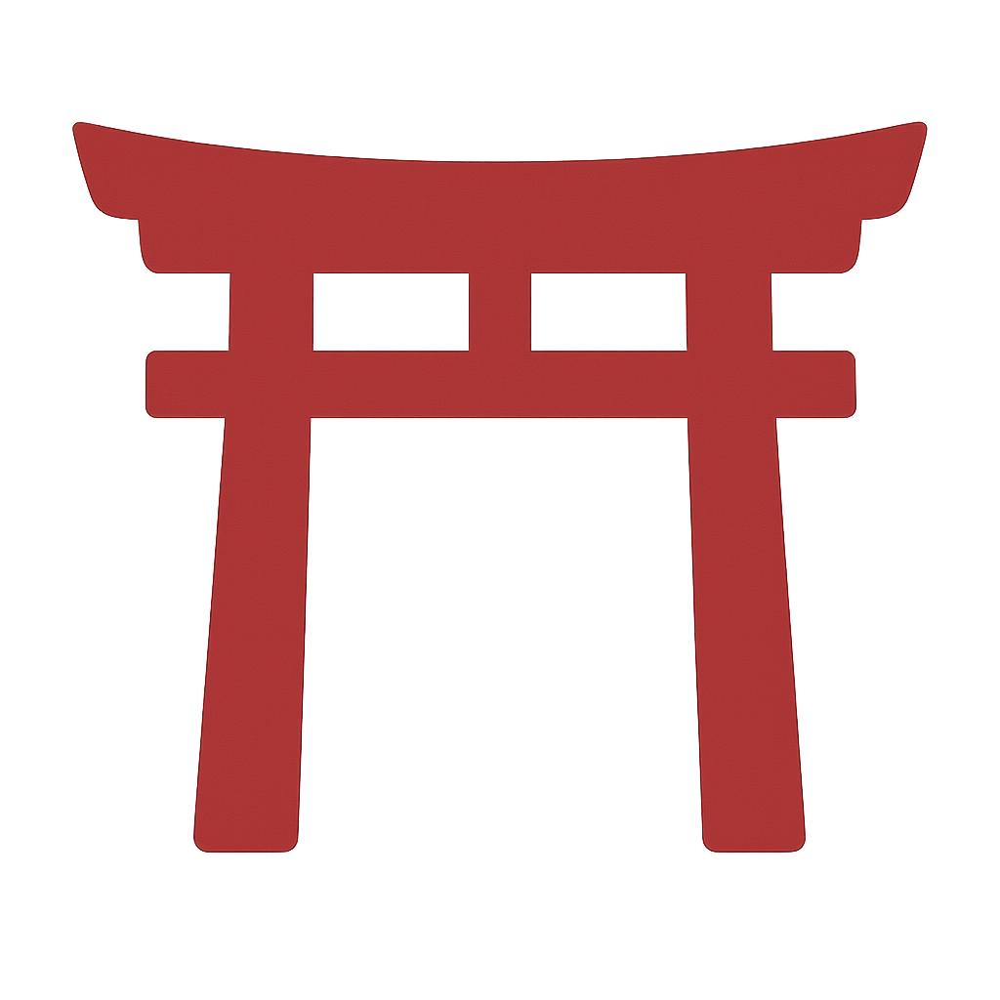

Kataware Doki – Il tempo si ferma
Viaggio romantico per coppie e momenti speciali.
Ideale per anniversari, lune di miele o semplicemente per vivere insieme la bellezza del Giappone in scenari da sogno. Relax, intimità, esperienze raffinate ed emozioni condivise.
- Durata: da 9 a 15 notti
- Città visitabili: Tokyo, Kyoto, Kanazawa, Hakone, Nikko, Osaka, Kawaguchiko, Kamakura, Enoshima, Nagano
- Per coppie e anniversari
A partire da 2.590€
Panoramica del viaggio
Come usare la mappa
- Clicca sui torii  per scoprire le tappe del viaggio
- Trascina per esplorare liberamente la mappa
- Usa lo zoom per avvicinarti alle zone locali
Relax
Esperienze
Gastronomia
Shopping
Spiritualità
Itinerario tipo – 12 notti
Mattina: Partenza con volo notturno per il Giappone.
Pomeriggio: Arrivo all’aeroporto di Tokyo. Trasferimento in hotel in zona Shinjuku o Asakusa.
Sera: Passeggiata panoramica a Omoide Yokocho e cena in izakaya riservata.
Shinjuku, Omoide Yokocho
Mattina: Visita al giardino Hamarikyu con pausa tè nella casa da tè sul lago.
Pomeriggio: Visita al museo Mori Art di Roppongi e salita sul rooftop Sky Deck.
Sera: Cena con vista alla Tokyo Tower (area Shiba-Koen).
Hamarikyu Garden, Mori Art, Tokyo Tower
Mattina: Escursione a Kamakura: visita al Grande Buddha (Daibutsu) e al tempio Hasedera con vista mare.
Pomeriggio: Passeggiata a Enoshima, salita al faro e relax tra le lanterne del giardino Samuel Cocking.
Sera: Tramonto sulla costa e rientro a Tokyo.
Daibutsu, Hasedera, Enoshima Lighthouse
Mattina: Partenza per Kawaguchiko, sistemazione in ryokan vista lago con onsen.
Pomeriggio: Escursione alla Chureito Pagoda e relax al lago Saiko o al villaggio Iyashi no Sato.
Sera: Cena kaiseki in camera e onsen privato.
Lago Kawaguchi, Chureito Pagoda, Iyashi no Sato
Mattina: Arrivo a Hakone, visita al museo all’aperto tra arte e natura.
Pomeriggio: Navigazione sul lago Ashi e vista sul Fuji. Passeggiata nel bosco sacro di Hakone-jinja.
Sera: Ryokan tradizionale con onsen.
Museo all’aperto, Lago Ashi, Hakone-jinja
Mattina: Treno veloce da Hakone a Kanazawa via Shin-Yokohama (Shinkansen). Arrivo nel primo pomeriggio.
Pomeriggio: Passeggiata nel quartiere Higashi Chaya e visita alla casa da tè Shima.
Sera: Cena tipica a base di granchio e pernottamento in hotel storico o machiya tradizionale.
Higashi Chaya, Casa da tè Shima
Mattina: Visita al Kenroku-en, uno dei tre giardini più belli del Giappone.
Pomeriggio: Museo di arte contemporanea 21st Century Museum e tempo libero per acquisti in area Katamachi.
Sera: Relax con massaggio di coppia e cena gourmet.
Kenroku-en, 21st Century Museum
Mattina: Partenza in treno per Kyoto. Sistemazione in boutique hotel nel quartiere Gion.
Pomeriggio: Visita al Ryoan-ji e passeggiata nel giardino segreto del Ninna-ji.
Sera: Passeggiata al tramonto lungo il canale di Gion-Shirakawa.
Ryoan-ji, Ninna-ji, Gion Shirakawa
Mattina: Visita al Kinkaku-ji (Padiglione d’Oro) e al Tempio Gio-ji immerso nel muschio.
Pomeriggio: Passeggiata romantica sul Sentiero del Filosofo fino al tempio Honen-in.
Sera: Cena kaiseki e spettacolo discreto con maiko (su richiesta).
Kinkaku-ji, Sentiero del Filosofo, Honen-in
Mattina: Escursione a Uji, città del tè: visita al Byodo-in e degustazione in casa da tè.
Pomeriggio: Visita al Fushimi Inari Taisha con camminata meditativa sotto i torii.
Sera: Rientro a Kyoto, cena libera.
Byodo-in, Fushimi Inari
Mattina: Trasferimento con shinkansen a Nagano. Ultimo onsen o visita allo Zenko-ji.
Pomeriggio: Proseguimento per aeroporto di Tokyo Haneda o Narita.
Sera: Imbarco e volo notturno per l’Italia.
Zenko-ji, Onsen finale
Arrivo in Italia e fine dei nostri servizi. Il viaggio continua nei ricordi.
Itinerario tipo – su mappa
Come usare la mappa
- Clicca sui torii per scoprire le tappe del viaggio
- Trascina per esplorare liberamente la mappa
- Usa lo zoom per avvicinarti alle zone locali
I luoghi del viaggio Kataware Doki
- Alloggi romantici con onsen o vista panoramica
- Voli andata/ritorno da principali aeroporti italiani
- Assicurazione medica, bagaglio e annullamento
- Travel kit per coppie e guida PDF dedicata
- Accesso al nostro travel assistant personale
- Pasti e bevande
- Attività o ingressi non specificati
- Servizi non espressamente indicati come inclusi
- Cena kaiseki privata in ryokan
- Esperienza fotografica per coppie
- Onsen privato riservato
- Upgrade suite romantica o notte in temple stay
Prezzo indicato valido per soggiorno minimo in bassa stagione e coppia in camera doppia.
Consigliamo di prenotare almeno 4 mesi prima per assicurare disponibilità e proposte esclusive.
Respira il viaggio – Kataware Doki
Utilizziamo cookie tecnici per garantire il funzionamento del sito e, previo consenso, cookie analitici e di terze parti per migliorare la tua esperienza. Leggi la nostra informativa.